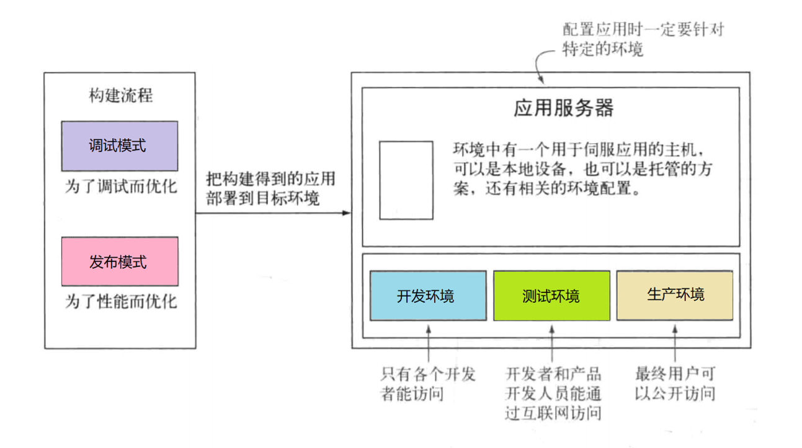
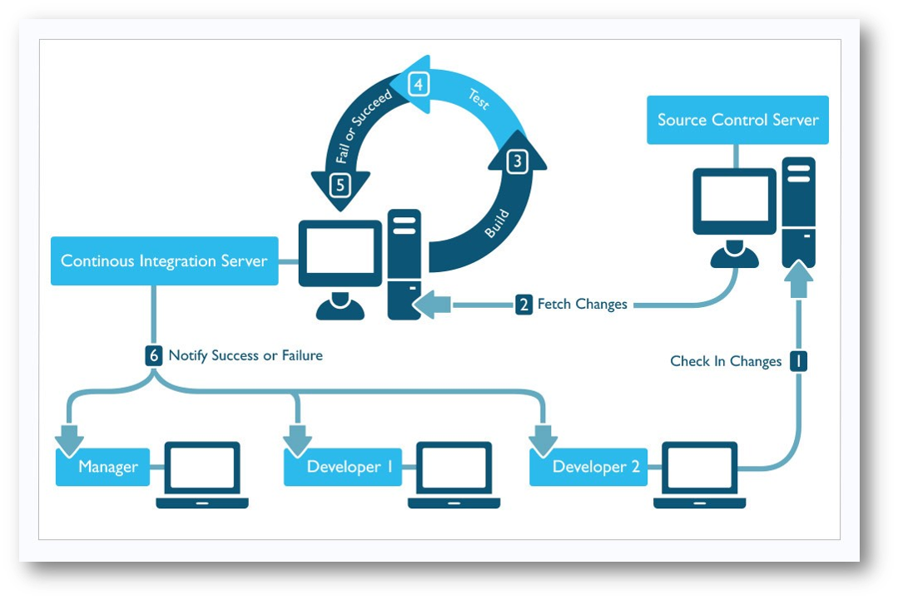

自动化构建
脚手架：本质上脚手架是代码，不是应用程序的功能，也不时应用程序的组成部分，主要负责完成前端程序自动化的构建。（多体现在命令上，比如
create-react-app命令）框架：框架是程序的一部分，完成程序的功能，主要为了方便组织安排功能模块
自动化构建输入的程序的代码，输出的是程序的软件
构建的模式和环境

自动化构建需要用到三项技术：
- 配置管理（SVN/GIT）
- 任务的调度（npm/grunt/gulp.js）
- 持续集成

案例体现：构建GitBook
在
GitHub中创建GitBook仓库，注意选择MIT协议、node版本的.gitignore文件在本地仓库中编写文件
~/GitBook(master) » vim ch01.md ch02.md SUMMARY.md
~/GitBook(master) » cat SUMMARY.md
- [简介](README.md)
- [第一章](ch01.md)
- [第二章](ch02.md)
- [第三章](ch03.md)
~/GitBook(master) » npm i -g gitbook-cli # 安装gitbook脚手架
~/GitBook(master) » gitbook build # 创建gitbook 会生成_book目录 在_book目录下lrd能访问电子书
- 利用分支生成
GitHub Pages---手动构建
~/GitBook(master) » git push
~/GitBook(master) » gitbook build
~/GitBook(master) » mv _book/* ~/tmp
~/GitBook(master) » git checkout -b gh-pages
~/GitBook(gh-pages) » rm *
~/GitBook(gh-pages) » mv ~/tmp/_book/* .
~/GitBook(gh-pages) » git add -A
~/GitBook(gh-pages) » git commit -m "book v0.1 publish"
~/GitBook(gh-pages) » git push --set-upstream origin gh-pages
- 利用自动构建生成
GitHub Pages
在master分支下编写.travis.yml
language: node_js
node_js:
- "node"
after_script:
- gitbook build
- cd ./_book
- git init
- git config user.name "${USER_NAME}"
- git config user.email "${USER_EMAIL}"
- git add .
- git commit -m "publish gitbook"
- git push --force --quiet "https://${ACC_TOKEN}@${GH_REF}" master:${BRANCH}
branches:
only:
- master
在master分支下编写package.json
{
"name": "gitbook",
"version": "1.0.0",
"description": "在线电子书",
"main": "index.js",
"scripts": {
"test": "echo \"Error: no test specified\" && exit 0"
},
"repository": {
"type": "git",
"url": "git+https://github.com/fuziwang/GitBook.git"
},
"author": "fuziwang",
"license": "MIT",
"bugs": {
"url": "https://github.com/fuziwang/GitBook/issues"
},
"homepage": "https://github.com/fuziwang/GitBook#readme",
"devDependencies": {
"gitbook-cli": "^2.3.2"
}
}
travisCI 持续集成 gh-page 并部署：https://segmentfault.com/a/1190000015274243
1a0cf5d52886dab6a55d356484c61b715a83cc29
ACC_TOKEN: d5433f9ab6a0ca4bda017b5
BRANCH: gh-pages
GH_REF: github.com/wangding/{repos_name}
USER_EMAIL: 408542507@qq.com
USER_NAME: wangding
部署成功后访问GitHub Pages
~/GitBook(master) » vim ch03.md SUMMARY.md
~/GitBook(master) » git add -A
~/GitBook(master) » git commit -m "book v0.2"
~/GitBook(master) » git push
在这个过程中的git相关的操作
版本回退：
git reset HEAD^ --hardgit reset --hard 5a4090分支操作：
git checkout -b gh-pagesgit branch -D gh-pages- 如果让
github上的仓库和本地的一致git push -f -u